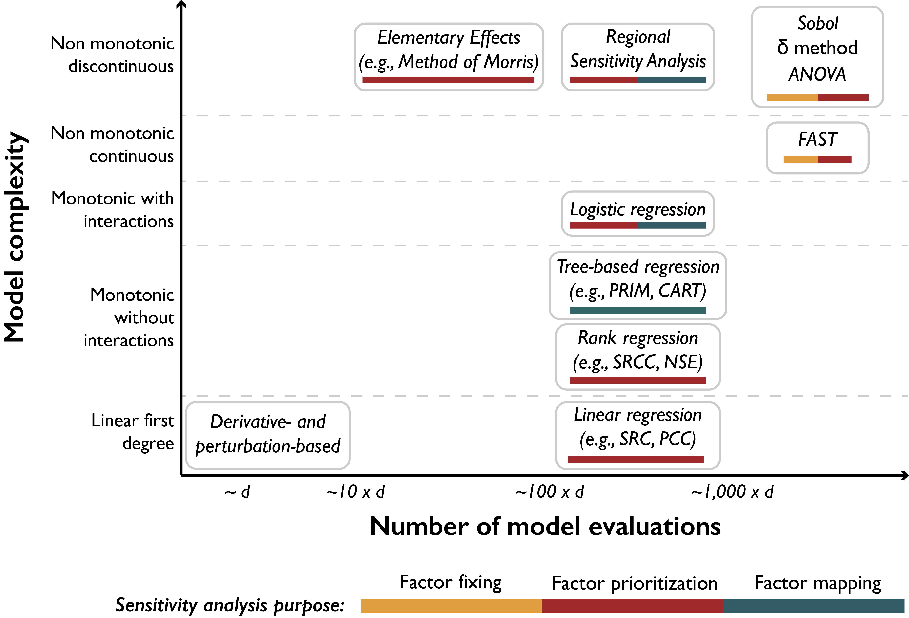

How To Choose A Sensitivity Analysis Method: Model Traits And Dimensionality
How To Choose A Sensitivity Analysis Method: Model Traits And Dimensionality¶
Fig. 3.5, synthesized from variants found in [51, 91], presents a graphical synthesis of the methods overviewed in this section, with regards to their appropriateness of application based on the complexity of the model at hand and the computational limits on the number of model evaluations afforded. The bars below each method also indicate the sensitivity analysis purposes they are most appropriate to address, which are in turn a reflection of the motivations and research questions the sensitivity analysis is called to address. Computational intensity is measured as a multiple of the number of model factors that are considered uncertain (\(d\)). Increasing model complexity mandates that more advanced sensitivity analysis methods are applied to address potential nonlinearities, factor interactions, and discontinuities. Such methods can only be performed at increasing computational expense. For example, computationally cheap linear regression should not be used to assess factors’ importance if the model cannot be proven linear and the factors independent, because important relationships will invariably be missed (recall the example in Fig. 3.5). When computational limits do constrain applications to make simplified assumptions and sensitivity techniques, any conclusions in such cases should be delivered with clear statements of the appropriate caveats.
{kind=link}

Classification of the sensitivity analysis methods overviewed in this section, with regards to their computational cost (horizontal axis), their appropriateness to model complexity (vertical axis), and the purpose they can be used for (colored bars). d: number of uncertain factors considered; ANOVA: Analysis of Variance; FAST: Fourier Amplitude Sensitivity Test; PRIM: Patient Rule Induction Method; CART: Classification and Regression Trees; SRCC: Spearman’s rank correlation coefficient: NSE: Nash–Sutcliffe efficiency; SRC: standardized regression coefficient; PCC: Pearson correlation coefficient. This figure is synthesized from variants found in [51, 91].¶
The reader should also be aware that the estimates of computational intensity that are given here are indicative of magnitude and would vary depending on the sampling technique, model complexity and the level of information being asked. For example, a Sobol sensitivity analysis typically requires a sample of size \(n * d+2\) to produce first- and total-order indices, where \(d\) is the number of uncertain factors and \(n\) is a scaling factor, selected ad hoc, depending on model complexity [46]. The scaling factor \(n\) is typically set to at least 1000, but it should most appropriately be set on the basis of index convergence. In other words, a prudent analyst would perform the analysis several times with increasing \(n\) and observe at what level the indices converge to stable values [125]. The level should be the minimum sample size used in subsequent sensitivity analyses of the same system. Furthermore, if the analyst would like to better understand the degrees of interaction between factors, requiring second-order indices, the sample size would have to increase to \(n * 2d+2\) [46].
Another important consideration is that methods that do not require specific sampling schemes can be performed in conjunction with others without requiring additional model evaluations. None of the regression-based methods, for example, require samples of specific structures or sizes, and can be combined with other methods for complementary purposes. For instance, one could complement a Sobol analysis with an application of CART, using the same data, but to address questions relating to factor mapping (e.g., we know factor \(x_i\) is important for a model output, but we would like to also know which of its values specifically push the output to undesirable states). Lastly, comparing results from different methods performed together can be especially useful in model diagnostic settings. For example, [13] used \(\delta\) indices, first-order Sobol indices, and \(R^2\) values from linear regression, all performed on the same factors, to derive insights about the effects on factors on different moments of the output distribution and about the linearity of their relationship.